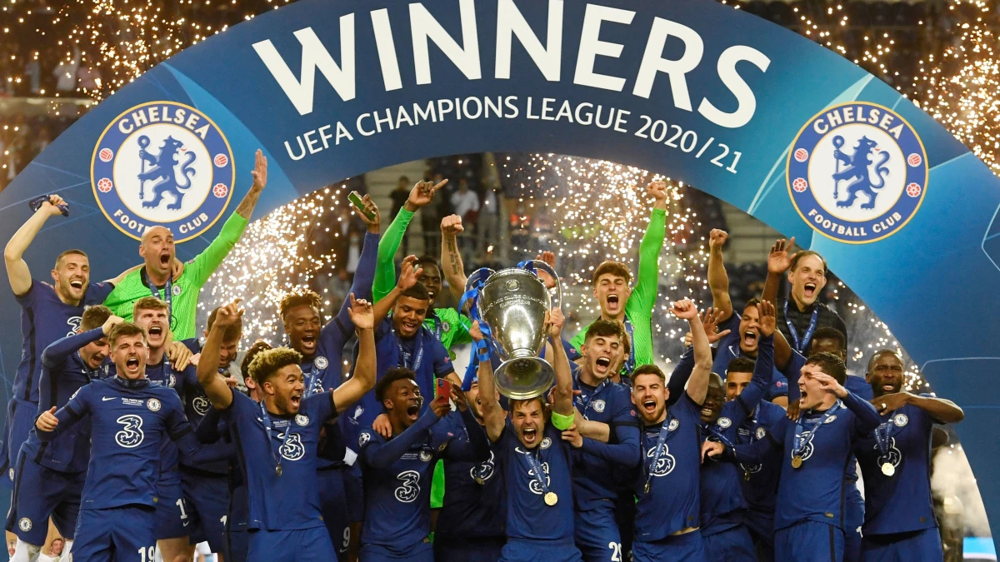
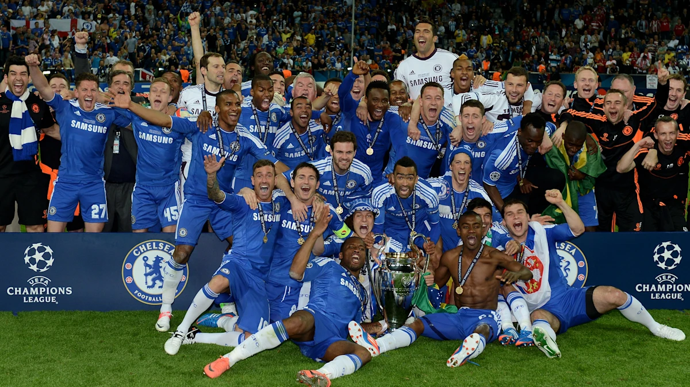
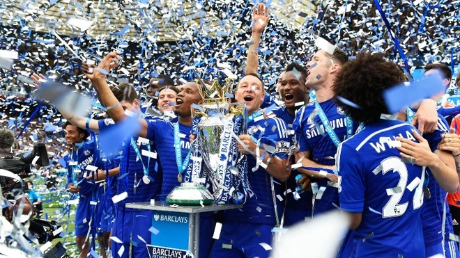
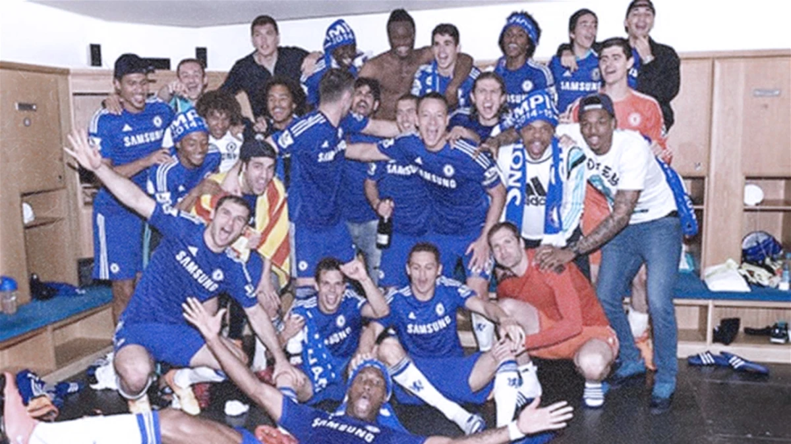
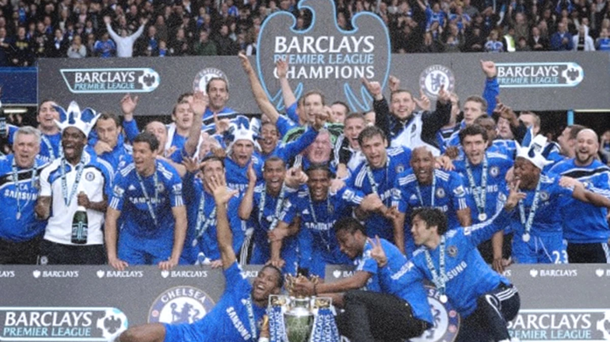
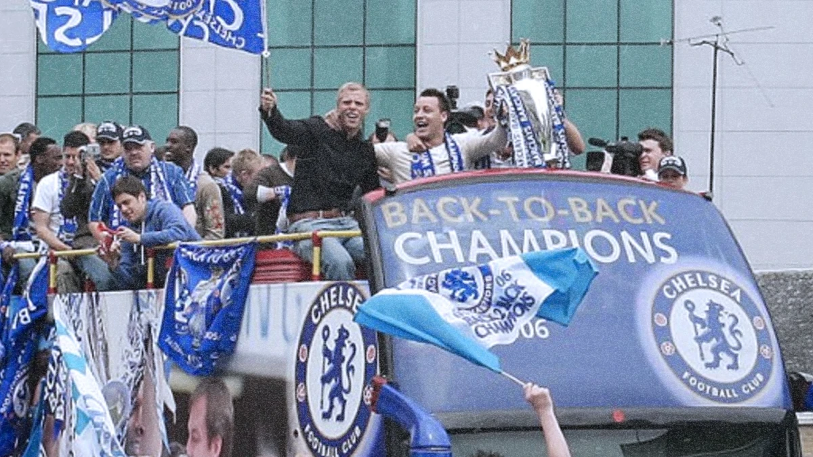
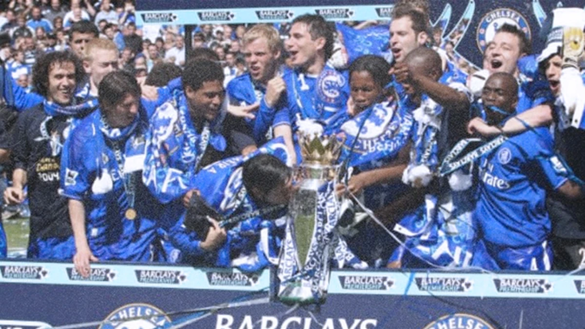
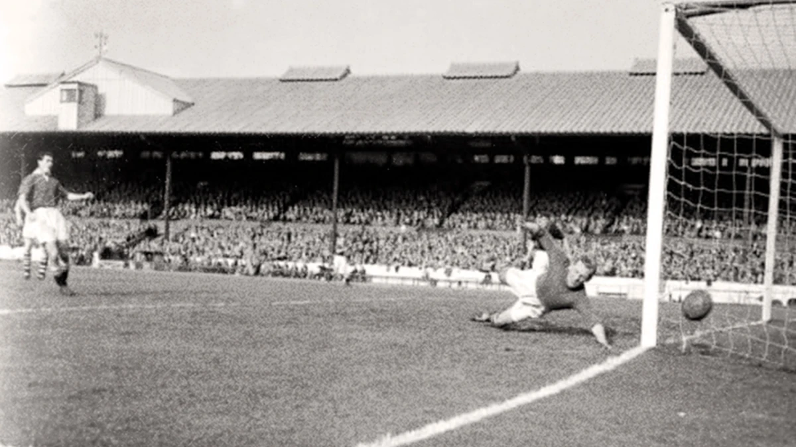

TRANG CHỦ
GIỚI THIỆU
LỊCH SỬ
THÀNH TÍCH
NGƯỜI HÂM MỘ
TRANG CHỦ
GIỚI THIỆU
LỊCH SỬ
THÀNH TÍCH
NGƯỜI HÂM MỘ

Chelsea đã đăng quang chức vô địch châu Âu lần thứ hai sau màn trình diễn xuất sắc trước Manchester City tại Porto...
Vào một đêm tuyệt vời tháng 5 năm 2012, hành trình trở thành nhà vô địch châu Âu của chúng ta cuối cùng đã thành hiện thực khi chúng ta đánh bại Bayern Munich.
Chelsea vô địch lần thứ 6 của giải đấu...
Chelsea lại vô địch!
Chức vô địch giải đấu thứ tư của chúng tôi đến sau bốn năm chờ đợi, một khoảng thời gian ngắn so với 50 năm để giành chức vô địch thứ hai vào năm 2005.
Là nhà vô địch, chúng tôi bước vào chiến dịch 2005/06 với tư cách là ứng cử viên sáng giá cho chức vô địch, và trong năm kỷ niệm 100 năm thành lập.
Người ta kỳ vọng rất nhiều khi nhà vô địch châu Âu và tự xưng là 'Người đặc biệt' Jose Mourinho được bổ nhiệm làm huấn luyện viên sau sự ra đi của Claudio Ranieri...
Chelsea đã lên ngôi vô địch nước Anh lần đầu tiên trong lịch sử vào cuối mùa giải 1954/55, đúng 50 năm sau khi câu lạc bộ được thành lập vào năm 1905...